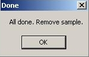

Select the Group menu option.
Select the Group menu option.Choose Select Group to use an existing group.
Choose New Group to create a new group.
For more information on the use of groups see Example: Using Groups.
 From the CAPWIN Main Screen, select the Auto Test
option from the Execute
menu.
From the CAPWIN Main Screen, select the Auto Test
option from the Execute
menu.
An Autotest screen specific to the type of test appears.
Select Type of Test. If the test shown is incorrect, click on Type of Test. If the test shown is incorrect, click on Type of Test.
Select Type of Test. If the test shown is incorrect, click on Type of Test. If the test shown is incorrect, click on Type of Test.
The Test Selection screen appears. Select Microflow P vs. Time from the yellow list.
Click OK. The Autotest screen appears.
Click OK. The Autotest screen appears.
Select Output File Name. If the file shown is incorrect or to create a new file, click on Output File Name.
The Output Data File selector appears. To select an existing file, click on the folder containing the file. Click on the file in the file list.
To create a new file, select or create a folder. Type a name for the file in the text.
Click OK. You are returned to the Autotest screen.
The Output Data File selector appears. To select an existing file, click on the folder containing the file. Click on the file in the file list.
To create a new file, select or create a folder. Type a name for the file in the text.
Click OK. You are returned to the Autotest screen.
End User, Test Reference, Sample ID, Lot_Number, and Operator are all optional and may be left blank. These items are printed on the reports for information and identification purposes.
Select Gas. If the gas shown is incorrect, click on Gas. The Gas Select screen appears. If X: Other Gas is chosen, you are prompted for the Name of Gas and Viscosity (cP). Click Done. You are returned to the Aut0test screen.
Select the Hold Parameters box (Pressure =, Time =, Data Time =) These are the hold parameters that control the Mircoflow test.
If the values shown are incorrect, click on Pressure =, Time =, Data Time =.
If you have chosen to calculate test data as if there were a linear seal around the sample (see the Microflow parameters listed in the Preferences window) you will also be prompted to enter a seal length.
If the values shown are incorrect, click on Pressure =, Time =, Data Time =.
If you have chosen to calculate test data as if there were a linear seal around the sample (see the Microflow parameters listed in the Preferences window) you will also be prompted to enter a seal length.
The message box at right appears.
If you hit Yes, the Diff. Perm. Test Method File selector appears.
Select a file from the list in right column. Click OK. You are returned to the Autotest screen. Skip to step 15.
If you hit No, continue on to the next step.
If you hit Yes, the Diff. Perm. Test Method File selector appears.
Select a file from the list in right column. Click OK. You are returned to the Autotest screen. Skip to step 15.
If you hit No, continue on to the next step.
Enter a value for the Internal Pressure (differential). Click Continue.
Enter a value for the Maximum Test Duration. Click Continue.
Enter a value for the Time between data points. Click Continue.

The message box at right appears. If you would like to save the test go on to the next step. If you choose not to save the test, the values entered are used for this particular test but are not saved to a file for future use. You are returned to the Autotest screen. Skip to step 16.
The Diff. Perm. Test Method File
selector appears.
Type a file name in the text box at the upper right of the screen (example: test04 ). Click OK . You are returned to the Autotest screen.
Type a file name in the text box at the upper right of the screen (example: test04 ). Click OK . You are returned to the Autotest screen.
Enter the Diameter, Cyl. Len. (or 0), and Thickness of the sample.
The diameter of the O ring which holds the sample determines the sample diameter. Verify that the value shown is correct. Enter the correct value if it is not.
Cyl. Len. (or 0) (cylinder length) is used if the sample is a hollow cylinder. Enter the cylinder length. For flat samples, use zero.
Thickness is the thickness of a flat sample or the thickness of the wall of a cylindrical sample. Verify that the value shown is correct. Enter the correct value if it is not.

The diameter of the O ring which holds the sample determines the sample diameter. Verify that the value shown is correct. Enter the correct value if it is not.
Cyl. Len. (or 0) (cylinder length) is used if the sample is a hollow cylinder. Enter the cylinder length. For flat samples, use zero.
Thickness is the thickness of a flat sample or the thickness of the wall of a cylindrical sample. Verify that the value shown is correct. Enter the correct value if it is not.
If the data file you have chosen already exists, you will see a screen similar to the one shown at right.
Clicking Yes continues the test and overwrites the existing data in the file with the new test data. Move on to the next step.
Clicking No returns to the Autotest screen. Go back to step 5 to select another Output File.

Clicking Yes continues the test and overwrites the existing data in the file with the new test data. Move on to the next step.
Clicking No returns to the Autotest screen. Go back to step 5 to select another Output File.
A message box prompts you to insert the dry sample. Insert the sample as described below then click OK to begin the test. (For complete information on installing samples, see Installing the Sample .)
Place the dry sample in the bottom of the sample chamber. Make sure it completely covers the O ring. If it does not, place one of the adapter plates in the bottom of the chamber, place the sample on the smaller O ring of the adapter, and place the matching adapter plate on top of the sample.
Place the thick spacing insert in the chamber. It should press far enough into the chamber so that the O ring on its side will pass below the upper rim of the chamber, but not so far that the entire insert is below the rim.
Screw the chamber cap with the quick-connect fitting onto the chamber and hand-tighten to the point where the O ring on the top of the spacing insert is compressed against the chamber cap.
Caution: Over-tightening the cap can cause the cap and spacing insert to seize. If this happens, the sample chamber must be replaced. Over-tightening may also damage the sample.
Connect the air hose.
After installing the sample and clicking OK
, the Current Test Status screen appears. A box appears in the center of the screen prompting you to click OK to start the test.
Upon reaching the set time limit of the test, a message box informs you that the test is complete and that the sample may be removed. Clicking the OK button returns you to the CAPWIN Main Screen.
